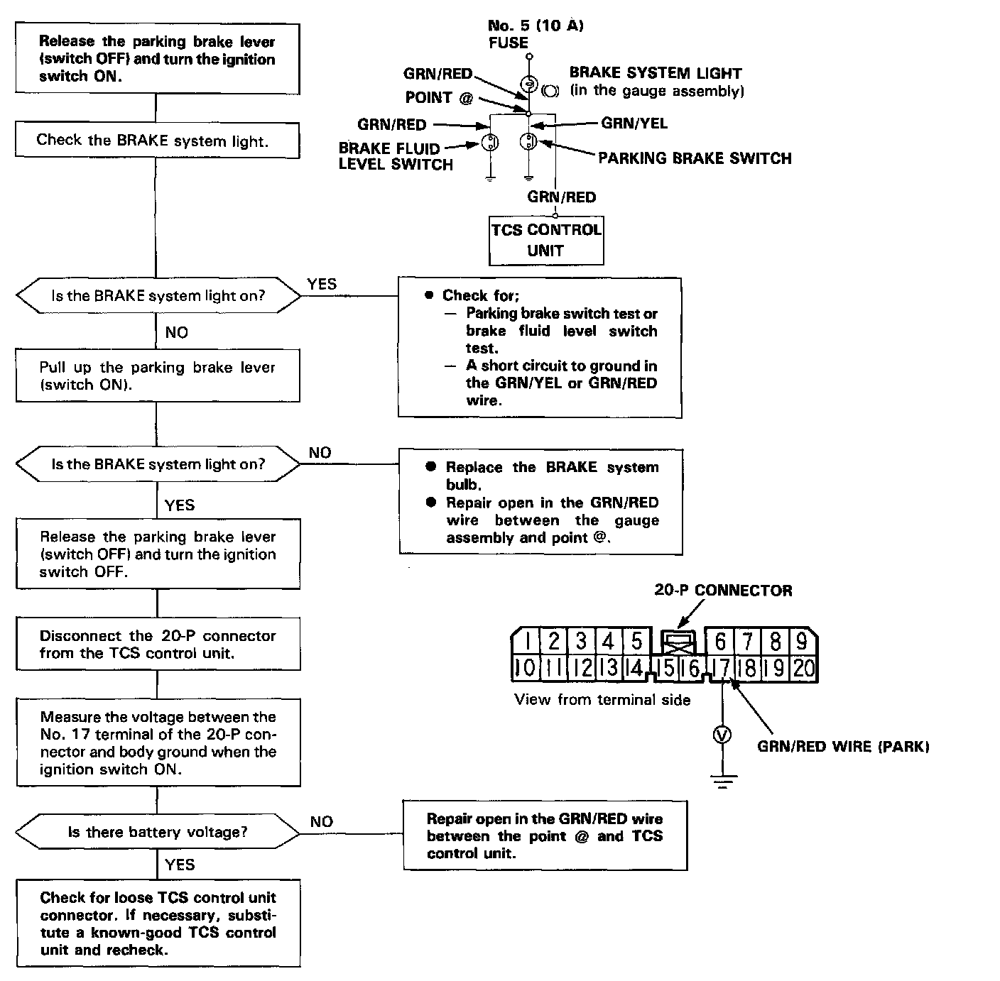

DTC 2
NOTE:- Before proceeding to the troubleshooting procedure, be sure to perform a running test and check whether the TCS indicator light comes on or not. If the TCS indicator light does not come on, the system is working properly. If the TCS indicator light comes on, make sure the parking brake lever is released.
- When both of the front wheels are running at 6mph (10 km/h) or over and the parking brake is applied for more than 30 seconds continuously, the TCS control unit will cause the TCS indicator light to come on. When the parking brake switch is turned OFF, the input signal to the TCS control unit becomes high. When the parking switch is turned ON, the input signal to the TCS control unit becomes low. Also, when the wire between the No.5 (10 A) fuse and the TCS control unit is disconnected or cut, the input signal becomes low.
